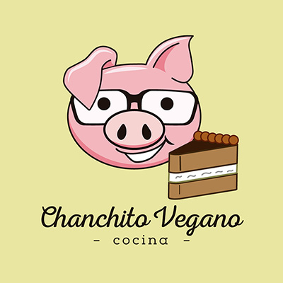

Solidaridad
Chanchito Vegano
Comida solidaria

Por Valeria Manzi
¿Cómo nace?
De unas ganas muy profundas de juntar la pasión por cocinar con el activismo por los animales.
Hace unos meses organicé con un amigo una pizzeada vegana en Morón y todo lo recaudado fue donado a Jaulas Vacías, un lindo refugio en Pilar… y se convirtió en algo más que un evento esporádico.
¿De qué se trata?
La idea es simple: poner al alcance de las personas comida rica y libre de sufrimiento animal… y que en el proceso se pueda ayudar mucho más que solo dejando de considerarlos ingredientes.
¿Para quiénes?No importa si vivís el veganismo como tu filosofía de vida, o si estas recién descubriéndolo. Hay gente que dice que es una moda, y si bien no comparto, prefiero que se ponga de moda esto y no la caza. Así puede que se despierte en uno la empatía dormida. Y ¿quién sabe? puede ser el proceso de un cambio de vida que también motive a otros.
Se juntó una suma considerable de $, pero al ver cuánto ellos gastaban sólo en alimento me di cuenta que necesitaba hacer La motivación… algo más que un evento esporádico. Así fue como puse en marcha Chanchito Vegano. Hice un Facebook, me puse a cocinar, un amigo diseñador me hizo el logo, y a la semana de empezar me presenté en dos ferias distintas.
Cada una de ellas fue en beneficio de dos refugios: Refugio de Lactantes (Beccar) y Hogar Corazón Animal.
¿Cómo se puede colaborar?Comprando, difundiendo en Facebook, donando frascos para las conservas. Ya implementamos la modalidad de pedidos online de conservas, tortas, panes caseros, etc. Tengo la suerte de tener a mi lado gente que me motiva y me ayuda, cocinando conmigo como mi mamá, trasladándome a las ferias como mi papá, y hasta acompañándome cebándome mate como mi hermano. Un entorno de gente que se pone feliz con la iniciativa, amigos que hacen pedidos a pesar de saber cocinar, desconocidos republicando la propuesta…Por eso si querés ser parte del cambio no es necesario que te amarres a un buque pesquero ni que te desnudes en la 9 de Julio con carteles, ¡bienvenido sea si te nace esto! Pero sino podes empezar por algo simple. Cambiando tus hábitos alimenticios, llevando algo rico para compartir en el trabajo, eligiendo una vida coherente en donde el amor que tenés por tu mascota se amplíe a todos los animales…
“The love you take is equal to the love you make”.
Jaulas Vacías: https://www.facebook.com/RefugioJV
Refugio de Lactantes: https://www.facebook.com/refugiodelactantes
Hogar Corazón Animal: https://www.facebook.com/hogarcorazonanimal/info/